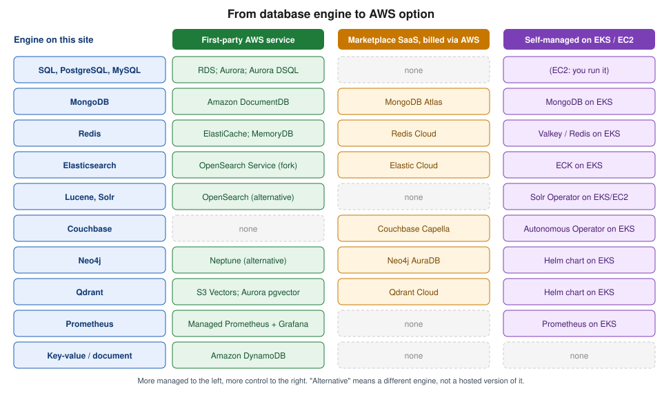

Managed Databases on AWS
|
This content was generated with the assistance of AI and should be verified against the official documentation before being relied on in production. |
Service names and lifecycle statuses below were checked against the official AWS documentation on 2026-10-01 and against AWS CLI v2 (2.37 line). Database offerings change names, editions and availability often (Elasticsearch Service became OpenSearch Service, Aurora Serverless v1 reached end of life, several services closed to new customers), so confirm the status of anything you are about to adopt on its product page. This is a landing page, not a hands-on walkthrough: for setup steps and CLI examples for a given engine, follow the link in the table to this section’s own page. The same overview for Azure is Managed Databases on Azure.
The running scenario, Bookshelf, uses two of these services: an Aurora PostgreSQL Serverless v2 cluster
bookshelf-catalog (database catalog) for the catalog-api, and a DynamoDB table Orders for the orders-api
(DocumentDB bookshelf-orders is the MongoDB-compatible variant), plus an ElastiCache for Valkey serverless cache
bookshelf-cache. The question this page answers is how to arrive at choices like those.
Choosing an engine first, a service second
Pick the data model and access pattern before looking at AWS service names. That decision is engine-neutral and is covered in Choosing the Right Database, which compares relational, document, search, vector, graph and other categories and walks through the questions that decide it. Only once the engine family is fixed does the AWS question arise: which of the first-party service, a Marketplace SaaS offering or a self-managed deployment fits your team. Each row of the next table states which of those three kinds the option is.
Engine-to-AWS-option map
For every engine this site documents, the table gives the AWS option(s), the kind of option, this section’s page that covers it and this site’s reference for the engine itself. "First-party" means an AWS-operated managed service. "Marketplace SaaS" means a partner-operated service that you subscribe to in AWS Marketplace and that is billed through your AWS account. "Self-managed" means you run the engine yourself on Amazon EKS or Amazon EC2.
| Engine | AWS option(s) | Kind | This section | Engine reference |
|---|---|---|---|---|
SQL (generic SQL) |
Amazon RDS (PostgreSQL, MySQL, MariaDB, SQL Server, Oracle, Db2); Amazon Aurora (PostgreSQL-compatible and MySQL-compatible); Aurora DSQL |
First-party |
||
PostgreSQL / pgvector |
RDS for PostgreSQL; Aurora PostgreSQL (including Serverless v2); Aurora DSQL (PostgreSQL-compatible, distributed) |
First-party |
||
MySQL |
RDS for MySQL and MariaDB; Aurora MySQL |
First-party |
||
MongoDB |
Amazon DocumentDB (MongoDB-compatible, including DocumentDB Serverless); MongoDB Atlas on AWS; MongoDB on EKS |
First-party / Marketplace SaaS / self-managed |
||
Redis |
Amazon ElastiCache (Valkey, Redis OSS or Memcached; serverless or node-based); Amazon MemoryDB; Redis Cloud on AWS |
First-party / Marketplace SaaS |
||
Elasticsearch |
Amazon OpenSearch Service (managed domains or Serverless; an OpenSearch fork, not Elasticsearch itself); Elastic Cloud on AWS; Elastic Cloud on Kubernetes (ECK) on EKS |
First-party (OpenSearch) / Marketplace SaaS / self-managed |
||
Lucene / Solr |
No managed Solr service from AWS (re-verify before relying on this); self-managed Solr on EKS (Solr Operator) or EC2; OpenSearch Service as the managed Lucene-based alternative |
Self-managed / first-party alternative |
||
Couchbase |
Couchbase Capella on AWS; Couchbase Autonomous Operator on EKS |
Marketplace SaaS / self-managed |
||
Neo4j |
Neo4j AuraDB on AWS; Neo4j Helm chart on EKS; Amazon Neptune as the AWS-native graph database (a different engine and query-language set) |
Marketplace SaaS / self-managed / first-party alternative |
||
Qdrant |
Qdrant Cloud on AWS; Qdrant Helm chart on EKS |
Marketplace SaaS / self-managed |
||
Prometheus |
Amazon Managed Service for Prometheus with Amazon Managed Grafana; Prometheus on EKS |
First-party / self-managed |
||
Key-value / document (DynamoDB) |
Amazon DynamoDB |
First-party |
||
Vector search (cross-engine) |
S3 Vectors; OpenSearch Service; Aurora and RDS PostgreSQL with pgvector; DynamoDB vector search; MemoryDB; plus the partner options above |
First-party / Marketplace SaaS |
OpenSearch and Search on AWS, Amazon Aurora, Amazon DynamoDB |
Where the AWS column says "alternative", the AWS service is a different engine that solves a similar problem, not a hosted version of the engine on this site. OpenSearch and Elasticsearch share a Lucene heritage and a similar query DSL but have diverged, and Neptune does not run Neo4j’s Cypher dialect as a drop-in. The Lucene reference page Lucene vs. Solr vs. Elasticsearch vs. OpenSearch and the graph page Neo4j vs. relational and other graph databases explain the differences.
The decision map groups the same options by how much of the stack AWS operates for you:

Marketplace SaaS databases run in the partner’s own AWS accounts, not in yours. You subscribe in the AWS Marketplace console, the charges appear on your AWS bill, and you connect over the public internet or, where the vendor offers it, over AWS PrivateLink so that traffic stays on the AWS network. Self-managed deployments run in your account: you own patching, backups, upgrades and failover, but you also get the full engine feature set and a free choice of version.
Other AWS-native options
The services below have no engine reference on this site but come up in the same decisions.
| Service | Notes |
|---|---|
Amazon Keyspaces |
Serverless, Apache Cassandra-compatible wide-column database. Pick it if an application already speaks CQL. |
Amazon Timestream |
Timestream for LiveAnalytics has been closed to new customers since 2025-06-20; Timestream for InfluxDB is the option for new time-series work. For Prometheus-style infrastructure metrics see the Managed Prometheus row above. |
Amazon Redshift |
The managed data warehouse, for analytical (OLAP) queries over large datasets rather than transactional workloads. |
Amazon QLDB |
End of support was 2025-07-31. Mentioned only so that you do not choose it from an older guide; ledger needs are now met by Aurora PostgreSQL with an append-only design. |
Common concerns across every engine
Each page linked from the map covers engine-specific setup and tuning. The concerns below apply, in some form, to every first-party option, and several apply to the self-managed ones as well.
Networking: subnet groups and private access
RDS, Aurora, DocumentDB, Neptune and ElastiCache are placed into your VPC through a subnet group (a DB subnet group, an ElastiCache subnet group and so on): a named set of subnets, in at least two Availability Zones, in which the service may place nodes. Use private subnets and leave "publicly accessible" off. Access is then controlled by a VPC security group that allows the database port only from the application’s security group, not from address ranges. DynamoDB, S3 Vectors and the other serverless services have no subnet group; you reach them through a gateway or interface VPC endpoint (see VPC Networking). From a laptop, reach a private database through a bastion with Session Manager port forwarding or through Client VPN (VPN and Hybrid Connectivity) rather than by making it public.
Creating the subnet group is usually the first CLI step, because the database create call refers to it by name:
export AWS_REGION=us-east-1
# Subnet IDs of two private subnets in different Availability Zones (placeholders).
aws rds create-db-subnet-group \
--db-subnet-group-name bookshelf-private \
--db-subnet-group-description "Private subnets for Bookshelf databases" \
--subnet-ids subnet-0aaaaaaaaaaaaaaaa subnet-0bbbbbbbbbbbbbbbbDerived from the AWS CLI Command Reference — rds create-db-subnet-group page. The ID values are placeholders.
Authentication: IAM database authentication and secrets
Two mechanisms replace a long-lived password in application configuration:
-
IAM database authentication (RDS and Aurora for MySQL and PostgreSQL, Aurora DSQL, ElastiCache and MemoryDB, and DocumentDB where supported) lets the application’s IAM role request a short-lived token and present it in place of a password. The role is an ECS task role, a Lambda execution role, an EKS Pod Identity role or an instance profile, as explained in Identity and Access. The token is generated locally (for RDS, with
aws rds generate-db-auth-token) and is valid for a few minutes; it only authenticates the connection, so a pooled connection that outlives the token keeps working. -
Secrets Manager-managed master passwords: create RDS and Aurora databases with
--manage-master-user-passwordand Secrets Manager creates, stores and rotates the master password for you, encrypted with a KMS key you choose. Older guides hand-build a rotation Lambda for this; that is no longer necessary for the master user. Application users that the engine does not manage still need ordinary secrets and rotation.
DynamoDB has no database password at all: access is IAM policy only, which is one reason it is a good fit for roles-only workloads. For secret storage, rotation and the KMS key side of this, see Secrets Manager, Parameter Store and KMS; for Spring Boot configuration import, see Configuration and Profiles. Marketplace SaaS and self-managed engines use their own users and API keys, so keep those in Secrets Manager as well.
Backups and point-in-time recovery
| Service | Automated backups / PITR | Notes |
|---|---|---|
RDS, Aurora |
Automated backups with a retention period you set (up to 35 days) and restore to any second in that window, into a new DB instance or cluster. |
Manual snapshots are kept until you delete them and can be copied across Regions and accounts. Restores always create a new database; they do not rewind the existing one. |
DynamoDB |
Point-in-time recovery, opt-in per table, with a configurable window of 1 to 35 days. |
On-demand backups, export to S3 and AWS Backup are separate mechanisms. |
DocumentDB, Neptune |
Continuous backup to S3 with PITR within the retention period, like Aurora. |
Manual cluster snapshots for longer retention. |
ElastiCache, MemoryDB |
Snapshots on a schedule (ElastiCache) or a Multi-AZ transaction log (MemoryDB, which is durable). |
An in-memory cache is normally rebuildable; treat backups as a convenience, not as the system of record. |
Self-managed on EKS/EC2 |
None by default. |
Use the engine’s own dump or snapshot tooling, or EBS snapshots through AWS Backup, and test the restore. |
AWS Backup can sit on top of most of these services to give one backup plan, retention policy and cross-Region copy for the whole estate. Backups are encrypted with the same KMS key as the source unless you specify another.
High availability: Multi-AZ, replicas and global replication
-
Multi-AZ keeps a standby or additional copies in other Availability Zones and fails over automatically. For RDS there are two shapes: a Multi-AZ DB instance (one synchronous standby that does not serve reads) and a Multi-AZ DB cluster (a writer plus two readable standbys in three AZs). Aurora’s storage is always spread over three AZs, and its high availability then depends on having a reader instance to promote. DocumentDB, Neptune, ElastiCache, MemoryDB and OpenSearch Service have their own Multi-AZ options. DynamoDB and the serverless services replicate across AZs without a setting.
-
Read replicas scale read traffic and can be placed in another Region for disaster recovery. They replicate asynchronously, so a promoted replica may lack the last writes.
-
Global replication (Aurora Global Database, DynamoDB global tables, ElastiCache Global Datastore, DocumentDB global clusters, Aurora DSQL multi-Region clusters) puts the data in several Regions with different consistency and write-location trade-offs; read the page for each before choosing.
Multi-AZ protects against an AZ failure, not against bad data or an accidental DROP TABLE; that is what the backups
above are for. The Region and Availability Zone model is in AWS Global Infrastructure.
Encryption
Encryption at rest with KMS is available on every first-party service above and is the default or can be switched on
at creation: for RDS and Aurora you must choose it when the database is created, because an unencrypted database cannot
be encrypted in place (take a snapshot, copy it with a KMS key, restore the copy). Encryption in transit is TLS: download
the service’s CA bundle (RDS, DocumentDB) or enable in-transit encryption (ElastiCache, MemoryDB) and require TLS in the
client, for example sslmode=verify-full for PostgreSQL. Choosing between AWS-owned, AWS-managed and customer managed
KMS keys, key policies and rotation is in Secrets Manager, Parameter Store and KMS.
Maintenance, versions and Extended Support
Managed services patch inside a maintenance window you choose, and apply minor-version upgrades automatically if you allow them; major-version upgrades are yours to schedule (RDS and Aurora Blue/Green Deployments make that safer). Each engine major version has a standard-support end date. After it, RDS and Aurora (and similar for ElastiCache) keep the database running but charge an Extended Support fee per vCPU-hour, rising over time, unless you upgrade first. Two dates relevant today: PostgreSQL 13 left standard support on 2026-02-28, and MySQL 8.0 standard support ended on 2026-07-31. Check the release calendars on the RDS and Aurora pages before choosing a version, and follow Amazon RDS and Amazon Aurora for upgrade mechanics.
Cost drivers
Every service bills differently, but the same handful of drivers recur: compute (instance hours, ACUs, node hours or request units), storage and provisioned IOPS, backup storage beyond the free allowance, cross-AZ and cross-Region data transfer, and Extended Support. Serverless options trade a higher unit cost for paying only while in use; provisioned options with reserved capacity are cheaper for steady load. Use the official pricing pages and the AWS Pricing Calculator rather than hard-coding numbers from a guide: prices differ by Region and change.
Migrating an existing database to AWS
AWS Database Migration Service (DMS) moves data between engines and from on premises or other clouds into AWS. It has three parts that are useful to know apart:
-
DMS replication does a one-time full load, ongoing change data capture (CDC), or both, from a source endpoint to a target endpoint. DMS Serverless provisions and scales the replication capacity automatically instead of you choosing a replication instance.
-
DMS Schema Conversion assesses and converts schemas and code objects when the source and target engines differ (for example Oracle to PostgreSQL). The older AWS Schema Conversion Tool (SCT) is a downloadable alternative.
-
DMS Fleet Advisor inventories an on-premises estate to help pick migration candidates.
For a same-engine move, the engine’s native tools are often simpler: pg_dump and pg_restore for PostgreSQL,
mysqldump or native replication for MySQL, mongodump and mongorestore for MongoDB-compatible targets, and
snapshot import where the service supports it. Whichever path you pick, assess compatibility first, rehearse the cutover,
and measure replication lag before switching traffic. Older guides show the standalone Schema Conversion Tool as the
only way to convert schemas; the managed DMS Schema Conversion is the current option.
Related pages
-
Choosing the Right Database — engine-neutral decision guide.
-
Comparing Vector Databases — the cross-engine vector database comparison with an AWS column.
-
EKS Clusters — running self-managed engines on EKS.
-
Identity and Access — roles used for IAM database authentication.